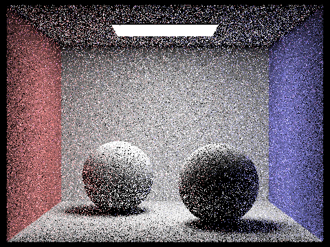

Project 3 Write-Up
By Sela Roach & Riddhi Bagadiaa
Link to Github pages: https://selaar.github.io/proj-webpage-template-airbears/
Overview
An overview of the project, including your approach to and implementation for each of the parts, as well as what problems you have encountered and how you solved them.
- In this assignment we generated rays using Monte Carlo Estimator, checked for ray-scene intersection, applied the acceleration structure of a Bounding Volume Hierarchy to speed up complex rendering, and generated realistic images through applying lighting and material. In ray generation and scene intersection we went from image space to camera space through scaling and translation, and applying camera to world space transformation matrix. In Bounding Volume Hierarchy we recursively created a BVH through hour split point being the average of the centroids of the longest axis. In direct illumination we estimated the direct lighting on a point by sampling uniformly in a hemisphere by applying the Monte Carlo Estimator and the reflection equation. In global illumination, we used Russian roulette and recursively called at least one bounce, utilizing our one bounce. In adaptive sampling, we concentrated samples in more difficult parts of the image and applied the adaptive sampling algorithm. The problems we encountered included bugs and segmentation faults which were from utilizing vectors in the wrong space, world or object, utilizing undefined intersection objects, misuse of functions for specific values of the reflection equation, and misunderstanding of intersections. We solved them by using print statements to help detect where the segmentation faults were happening, rewrote BBox intersect function a lot, going back and forth in the image to see what is missing, and going back to the lecture slides to understand the formulas better.
Part 1
- Walk through the ray generation and primitive intersection parts of the rendering pipeline.
- To transform the image coordinates to camera space we first got the camera space ray, which consisted of an origin (0,0,0), then to get the direction of the ray, we scaled the x and y by 2 and then by its corresponding x,y coordinate of the camera space corners. Then since the image space starts of at (0,0) but the camera space starts of at (-tan(0.5 * hFov), -tan(0.5 * vFov), -1), we translated the x by the bottom Left X (-tan(0.5 * hFov))and Y by the bottom Right Y (-tan(0.5 * vFov)). Then we created a world space ray with origin pos, and the direction of the camera space ray * camera to world transformation matrix. Lastly, we set the world space ray to have a min_t of nClip and a max_t of fClip.
- PathTracer::raytrace_pixel
- To estimate the integral of radiance over a pixel, we generated ns_aa number of samples, drawed a random sample, and created a new ray with coordinate x + sample.x normalized by dividing by the width of the sample buffer, and coordinate y + sample.y normalized by dividing by the height of the sample buffer. We had to normalize the x and y, since the (x,y) image space goes from (0,0) to (w,h), but in the conversion for camera::generate_ray, our image space is actually (0,0) to (1,1). Then we called est_radiance_global_illumination of the ray to estimate the scene radiance along the ray, aggregating the sum of this value across all the samples. Since Monte Carlo has a 1/N factor, we divided this sum by num_samples, then updated the pixel value and updated the smapleCountBuffer.
- Explain the triangle intersection algorithm you implemented in your own words.
- To test whether there is an intersection between a triangle and the input ray, we applied the Moller Trumbore Algorithm and then tested whether the conditions if an intersection was met. In that t lies between the ray’s range of min_t and max_t (representing what is visible). For example, in applying the Moller Trumbore Algorithm, we calculated the edge1 vector through subtracting triangle point p2 with p1, the edge2 vector by subtracting triangle point p3 with p1, the S vector by taking the ray’s origin vector subtracted by p1, S1 vector by taking the ray’s direction vector cross product with edge2 vector, and then the S2 vector by cross product the S vector and edge1 vector. Then we created a vector that consisted of S2 dot with E2, S1 dot S, S2 dot with direction vector. Lastly, we multiplied this by 1/the dot product of S1 and edge1. Therefore returning a vector that consists of t, b1, b2, where t represents a possible intersection, b1 represents the barycentric coordinate beta, b2 represents the barycentric coordinate gamma, which allows us to calculate alpha by 1-b1-b2. To test whether t was a valid intersection, we checked whether it was in the rays range having a t >= min_t and t <=max_t of the ray. Then we had to confirm that the Barycentric coordinates were all >= 0 and <= 1. If all the conditions were true, we had a valid intersection. Since we want the nearest intersection, we updated the rays max_t by taking the minimum of its current max_t and this new t. Lastly, we updated the triangle intersection object with this new t, the normal - calculated by using Barycentric coordinates provided by the Moller Trumbore Algorithm, and the normals at each point: n1(1-b1-b2) + n2(b1) + n3(b2), and set the primitive and the bsdf accordingly.
- Show images with normal shading for a few small .dae files.
Part 2
- Walk through your BVH construction algorithm. Explain the heuristic you chose for picking the splitting point.
- Our BVH construction algorithm consisted of computing the bounding box of primitives in the iterator from start to end, initializing a new BVHNode with that bounding box, and then checking to see if there were more than max_leaf_size primitives in that bounding box. If not, then we set the start and end of the node to the start and end of the iterator respectively, and then return the node. If there were more than max_leaf_size primitives then we did a split. Our heuristic for picking the splitting point was taking the longest axis (the axis with the largest bbox.extent), and then getting the average centroid of that axis. Once we had our split, we partitioned the elements that were less than or equal to the split to the left, and the other elements to the right. Lastly, we recursively called construct_bvh on the left node and the right node, with the left node start=start, end=bound(beginning of the partition iterator), and the right node start=bound, and end=end. Then we just returned the node.
- For our BBox:intersect we applied the optimized ray-plane intersection test for axis aligned planes, then got the mins and maxes for each axis. Next, we took the min of the maxes, the max of the mins. Finally, we returned false in the case that t_min>t_max, and with complete miss and invalid hits which were when the ray doesn’t intersect the bbox at all, and the ray intersects but at invalid t_values.
- For our BVH has_intersection, we first got the bounding box of the node and checked to see whether the ray intersected it, if it didn’t return false. Then we checked to see if the node was a leaf node, if it was, we iterated through all the primitives of the iterator from start to end, and checked if the ray intersected the primitive, if so, we short circuited and just returned true. If going through all primitives and no intersections is found, we return false. Lastly, in the case that the node was not a leaf node, we recursively called has_intersection on the left node and the right node.
- For our BVH intersect function, we first got the bounding box of the node and checked to see whether the ray intersected it, if it didn’t return false. Then we checked to see if the node was a leaf node, if it was, we iterated through all the primitives of the iterator from start to end, and checked if the ray intersected the primitive, keeping track of whether there indeed was at least one hit, but also getting the closest intersection by going through all of them, then we returned whether there was a hit. Lastly, in the case that the node was not a leaf node, we recursively called intersect on the left node, stored that value, recursively called intersect on the right node, stored that value, and returned whether the left or right node had a hit.
- Show images with normal shading for a few large .dae files that you can only render with BVH acceleration.
- Compare rendering times on a few scenes with moderately complex geometries with and without BVH acceleration. Present your results in a one-paragraph analysis.
- In comparing the rendering times of complex geometries such as Max Planck and CBlucy with and without BVH acceleration, it is clear that with BVH acceleration it is significantly faster. While of course there is some variation with runtimes, for Max Planck it had a local runtime without BVH of 486.107 seconds and with BVH a local runtime of 0.1827seconds. For the CBlucy image, it had a local runtime without BVH of 1349.9865s and with BVH a local runtime of 0.1544s. Therefore it is obvious that with a BVH, the rendering time is significantly better. The reason overall why BVH is better is because the default is iterating through all the primitives that exist while in BVH the primitives are partitioned, and recursively being checked, with short circuit checking of intersections with bounding boxes, that make the rendering time super fast.
Part 3
- Walk through both implementations of the direct lighting function.
- For both implementations, we calculated the DiffuseBSDF::f as the albedo-reflectance over pi. We also set zero_bounce_radiance to return the emission of the intersection object bsdf. Lastly, we return the sum of zero_bounce_radiance and one_bounce_radiance in est_radiance_global_illumination.
- Direct Lighting with Uniform Hemisphere Sampling Implementation:
- For this implementation, we first got a sample from Hemisphere sampler (wj) and created a new ray. It’s origin = hit point + wj * EPS_F vector, converting wj from object to world space, with a direction of wj converted from object space to world space. Then we set this new ray min_t to EPS_F, and checked whether this new Ray intersected the bvh. If it didn’t we continued, but if it did we calculated the Monte Carlo estimator for the reflectance equation. In which we multiplied BSDF::f(w_out, wj) by BSDF::get_emission of the new ray intersection object * const_theta(wj), all divided by the p(wj) = 1/2pi. Lastly, we repeated this process num_samples times, aggregating the sum of the Monte Carlo estimate and dividing this sum by num_samples. Wj being the same as wi notation wise.
- Direct Lighting by Importance Sampling Lights:
- For this implementation, for each light in the scene, we sampled the light ns_area_light times (excluding point lights which were sampled once by breaking out the loop), got a sample of the light by using sample_L which set distToLight, pdf, and wi, and casted a new ray with origin hit point + (wi * EPS_D vector) with direction wi, since wi is already in the world space we did not have to do any conversions there. Then we set the new ray min_t to EPS_F, new ray max_t to distToLight - EPS_F. Next, we checked whether this new Ray intersected the bvh, if it did we continued, but if it did not we applied the reflectance equation, in which we multiplied BSDF::f(w_out, wj) by emitted radiance (returned from sample_L) * const_theta(wj), all divided by the pdf (from sample_L), where the wj for function f and cos_theta was converted from world to object space. Next, we checked to see whether the light was a delta light, if it was we can just add the reflection equation result once to its own point_light sum and break out of the loop. On the other hand, if it was an area light, we added the reflection equation result to the area_light sum (repeated ns_area_light times). Lastly, we added the sum of the point light with the sum of area light, with area light sum divided by ns_area_light.
- Show some images rendered with both implementations of the direct lighting function.
- Direct Lighting with Uniform Hemisphere Sampling Implementation
- ./pathtracer -t 8 -s 16 -l 8 -H -f CBbunny_H_16_8.png -r 480 360 ../dae/sky/CBbunny.dae
- ./pathtracer -t 8 -s 64 -l 32 -m 6 -H -f CBbunny_H_64_32.png -r 480 360 ../dae/sky/CBbunny.dae
- Direct Lighting by Importance Sampling Lights
- ./pathtracer -t 8 -s 64 -l 32 -m 6 -f bunny_64_32.png -r 480 360 ../dae/sky/CBbunny.dae
- ./pathtracer -t 8 -s 64 -l 32 -m 6 -f dragon_64_32.png -r 480 480 ../dae/sky/dragon.dae
- Focus on one particular scene with at least one area light and compare the noise levels in soft shadows when rendering with 1, 4, 16, and 64 light rays (the -l flag) and with 1 sample per pixel (the -s flag) using light sampling, not uniform hemisphere sampling.
- 1 Light Ray - super noisy
-
- 4 Light Ray - less noisy
- 16 Light Ray - less noisy and smoothed a bit
- 64 Light ray - Significantly less noisy and really smoothed shadows
- Overall we can see that as the light rays increase, the noise in the soft shadows goes from being super noisy, large, and sporadic, encompassing a large area to becoming more gradual and soft, taking up less area and having a more centered shadow.
- Compare the results between uniform hemisphere sampling and lighting sampling in a one-paragraph analysis.
- Overall it is clear that the lighting sampling renders a clearer and smoother image, while in the uniform hemisphere sampling we can still see some noise. Therefore, sampling points on a light is better than uniformly sampling incoming ray directions in the hemisphere, because by sampling the lights we can get a more accurate representation vs just doing it uniformly where it is more of an estimation. Thus our shadows are smoother and our image has no noise with light sampling, since it is not random but coming from known light sources.
Part 4
- Walk through your implementation of the indirect lighting function.
- Indirect lighting comprises of light from a direct source, called zero bounce lighting and indirect light received from light bouncing off different sources nearby. Therefore, indirect lighting = zero bounce lighting + at least one bounce lighting.
Atleast one bounce lighting calculates the total lighting at a point incoming from all directions. The luminance of each incoming ray is weighted by the amount of radiance lost by bouncing off of other surfaces.
We first sample random rays that bounce at the hit point. This is labeled wi. We then check if the new ray insterects with our bvh. If there is no intersection, it means that it will not bounce off of anything and reach the hit point.
If it does intersect, we call one_bounce_radiance since we know that the indirect light bounces at least once before reaching the hit point. We also check to make sure that the light is not a point light by calling bsdf->is_delta().
Next, we determine the number of bounces for each ray based on the maximum depth of the ray as well as a random Russian Roulette probability. If we reach the maximum depth of a ray or if our random sample returns false, we terminate the function and return the total radiance calculated.
The total radiance is the sum of the radiance from each ray at the hit point. It can be written as a recursive function
L_out += at_least_one_bounce_radiance(new_ray, *nIsect) * p_prime * cos_theta(wi) / pdf;
Where p_prime is the sample incoming ray wi with a pdf. Cos_theta(wi) is the cosine of the angle between the normal and wi.
We set our Russian Roulette probability to be 0.65 (1-0.35).
We don’t add to the radiance in the case where cos_theta(wi) is not positive due to Lamberts law.
Finally, we return the total radiance at that hit point.
- Show some images rendered with global (direct and indirect) illumination. Use 1024 samples per pixel.
- ./pathtracer -t 8 -s 1024 -l 16 -m 5 -r 480 360 -f spheres.png ../dae/sky/CBspheres_lambertian.dae
- ./pathtracer -t 8 -s 1024 -l 16 -m 5 -r 480 360 -f CBbunny.png ../dae/sky/CBbunny.dae
- ./pathtracer -t 8 -s 1024 -l 16 -m 5 -r 480 360 -f CBemty.png ../dae/sky/CBempty.dae
- Pick one scene and compare rendered views first with only direct illumination, then only indirect illumination. Use 1024 samples per pixel. (You will have to edit PathTracer::at_least_one_bounce_radiance(...) in your code to generate these views.)
- Only direct illumination - Zero + one bounce
- Only indirect illumination - More than one bounce
- It is clear that direct illumination is more bright as it gets the bounces of the main light source thus having a greater illumination.
- For CBbunny.dae, compare rendered views with max_ray_depth set to 0, 1, 2, 3, and 100 (the -m flag). Use 1024 samples per pixel.
- ./pathtracer -t 8 -s 1024 -l 16 -m 0 -r 480 360 -f CBbunny.png ../dae/sky/CBbunny.dae
- ./pathtracer -t 8 -s 1024 -l 16 -m 1 -r 480 360 -f CBbunny.png ../dae/sky/CBbunny.dae
- ./pathtracer -t 8 -s 1024 -l 16 -m 2 -r 480 360 -f CBbunny2.png ../dae/sky/CBbunny.dae
- ./pathtracer -t 8 -s 1024 -l 16 -m 3 -r 480 360 -f CBbunny.png ../dae/sky/CBbunny.dae
- ./pathtracer -t 8 -s 1024 -l 16 -m 100 -r 480 360 -f CBbunny.png ../dae/sky/CBbunny.dae
- It is clear as you increase the bounces of light, it gets brighter.
- Pick one scene and compare rendered views with various sample-per-pixel rates, including at least 1, 2, 4, 8, 16, 64, and 1024. Use 4 light rays.
- ./pathtracer -t 8 -s 1 -l 4 -m 5 -r 480 360 -f spheres1_4.png ../dae/sky/CBspheres_lambertian.dae
- ./pathtracer -t 8 -s 2 -l 4 -m 5 -r 480 360 -f spheres2_4.png ../dae/sky/CBspheres_lambertian.dae
- 
- ./pathtracer -t 8 -s 4 -l 4 -m 5 -r 480 360 -f spheres4_4.png ../dae/sky/CBspheres_lambertian.dae
- ./pathtracer -t 8 -s 8 -l 4 -m 5 -r 480 360 -f spheres8_4.png ../dae/sky/CBspheres_lambertian.dae
- ./pathtracer -t 8 -s 16 -l 4 -m 5 -r 480 360 -f spheres16_4.png ../dae/sky/CBspheres_lambertian.dae
- ./pathtracer -t 8 -s 64 -l 4 -m 5 -r 480 360 -f spheres64_4.png ../dae/sky/CBspheres_lambertian.dae
- ./pathtracer -t 8 -s 1024 -l 4 -m 5 -r 480 360 -f spheres1024_4.png ../dae/sky/CBspheres_lambertian.dae
Part 5
- Explain adaptive sampling. Walk through your implementation of the adaptive sampling.
- Adaptive sampling is an algorithm used to increase the sampling rate for areas which are more important and are more difficult and have less samples per pixel for areas that are not very relevant.
- The goal of this algorithm is to sample n number of times. After every samplesPerBatch number of times, we check if the rays converge. The idea behind this is that if the rays converge at a pixel before the total number of samples is reached, then we can stop iterating and use the converged value. This saves compute time on less difficult places.
- At every iteration, we generate a new random ray, set its max depth and get the scene radiance. We also get the illuminance by calling scene_rad_ray.illum().
- Every samplesPerBatch number of times, we calculate the mean and variance of the rays generated so far. Mean depends on the sum of luminance of each ray and variance depends on the sum of the squares of the luminance of each ray, as shown below:
- mean = s1/num_samples
- And the variance using variance = (1.0 / (num_samples - 1)) * (s2 - (s1*s1/num_samples))
- Using the computed values, we can find I, where I = 1.96 * std::sqrt(variance) / num_samples
- I is a terminating condition to check if the pixel has converged. If I < maxTolerance * mean, we assume that the pixel has converged and we break out of our iteration loop. In this case, we calculated the mean above and we set maxTolerance to a constant = 0.05. It is important that we update the num_samples to the actual number of samples taken for that pixel upon convergence.If the loop isnt terminated, we add the luminance of the current ray to s1 and square of the luminance to s2.
- We also add this newly generated array to the sum of rays we want to compute at a point.Finally, once we have either converged or reached the max num_samples, we leave the for loop and update the sample buffer and sample count buffer.
- Pick two scenes and render them with at least 2048 samples per pixel. Show a good sampling rate image with clearly visible differences in sampling rate over various regions and pixels. Include both your sample rate image, which shows your how your adaptive sampling changes depending on which part of the image you are rendering, and your noise-free rendered result. Use 1 sample per light and at least 5 for max ray depth.
- -f spheres.png ../dae/sky/CBspheres_lambertian.dae
- -f spheres.png ../dae/sky/CBspheres_lambertian.dae
- At the end, if you worked with a partner, please write a short paragraph together for your final report that describes how you collaborated, how it went, and what you learned.
- We collaborated on every task, in that for every task both of us were involved, in bouncing off each other's ideas and more. We started working on the project from the very start of the release date, but task 2 definitely took up a lot of time. Also, since each part was dependent on each other, if we caught a mistake in the future part, we had to backtrack. We learned how complex illumination is and how significant Bounding Volume Hierarchies are in speeding up rendering, especially having a good split. Also, learned how to test for intersection with multiple primitives.We also learnt ray tracing and understood the implementation of it better. Lastly, I think the direct illumination and global illumination aspect was quite interesting.